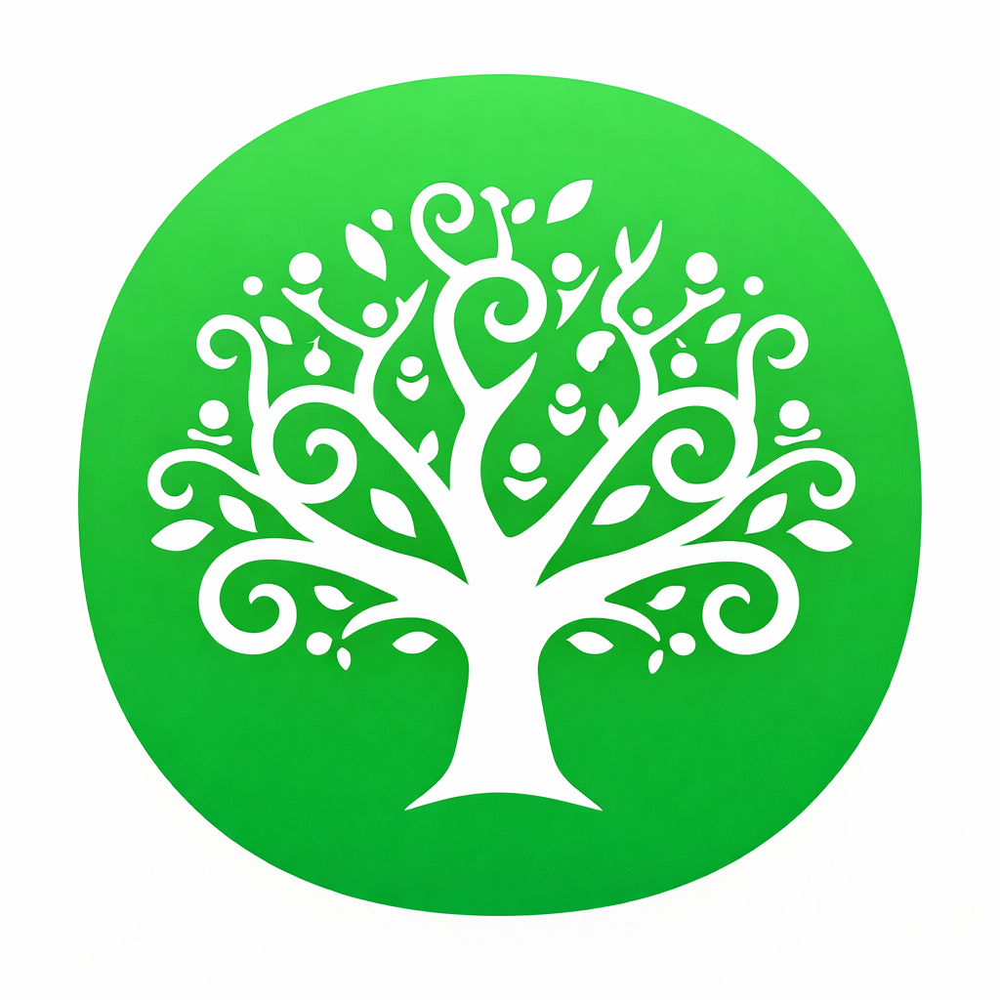
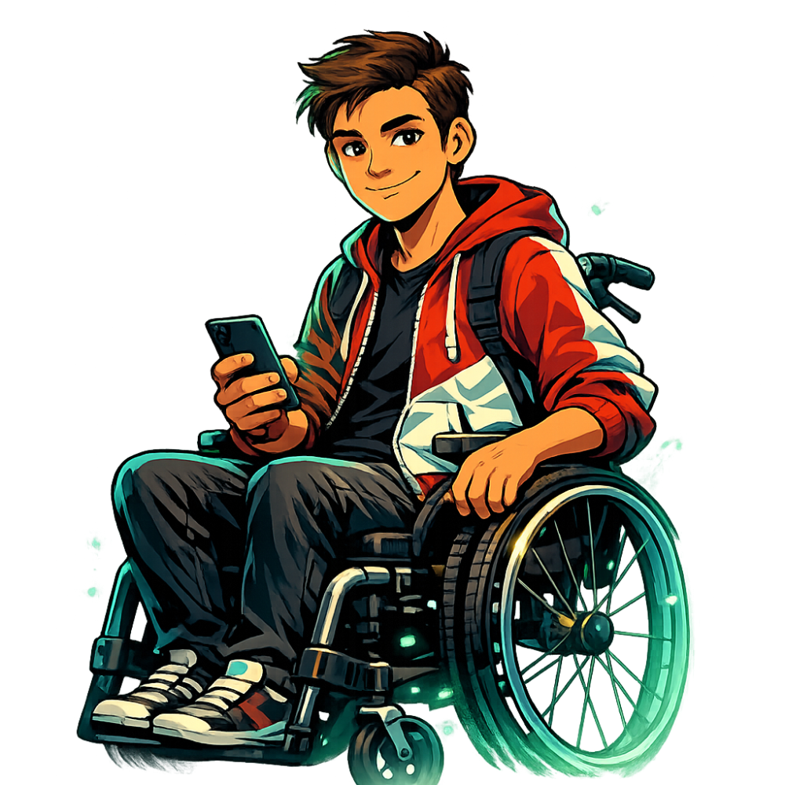

▲ tap the logo to enter ▲

now
Let's Go ➜
Nepean
🛡️
School
WhatsApp Group Chat Safety
👤 My Name:
◀
👥
Group Name
Members
🛡️
⭐ 0
Step 1 of 5
🔊 Read Aloud
📖 Easy Read
💡 Hint
🧹 Less Clutter
Continue ➜
Try Again ↺
📋 What Did We Learn?
↺ Try Again
📝 Practice
🏠 Menu
✕
🛡️ Safety Help
If something feels wrong, follow these steps:
Pause and think.
Don't react straight away. Take a breath.
Check your feelings.
Does this make you feel unsafe, uncomfortable or worried?
Choose a safe action.
You can leave the chat, block someone, report a message or tell a trusted adult.
👤 Talk to a Trusted Adult
👨👩👧
Parent or carer
Talk to someone at home you trust.
🧑🏫
Teacher
Your class teacher or class ES.
💚
Nepean School Wellbeing Team
Sarah Bylart